1
Beziehungsbereich unter der Tabelle
Ein ausgewählter Datensatz zeigt seine verknüpften Objekte in Gruppen unterhalb der Rohdatentabelle.
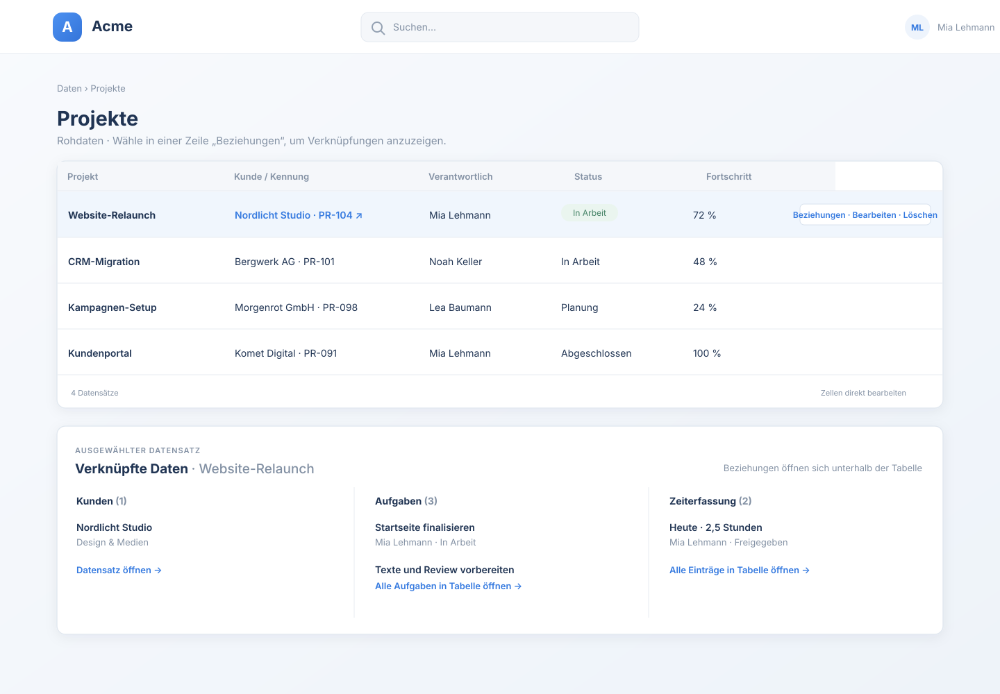
Acme · Designvergleich
UI-Muster für den Weg von einem Geschäftsobjekt zu seinen verknüpften Daten. Die Mockups verwenden dieselbe ruhige Farbwelt wie der Prototyp.
Ein ausgewählter Datensatz zeigt seine verknüpften Objekte in Gruppen unterhalb der Rohdatentabelle.

Ein Inspektor bleibt neben der Tabelle geöffnet. Datensatzdetails und Beziehungen sind schnell erreichbar.
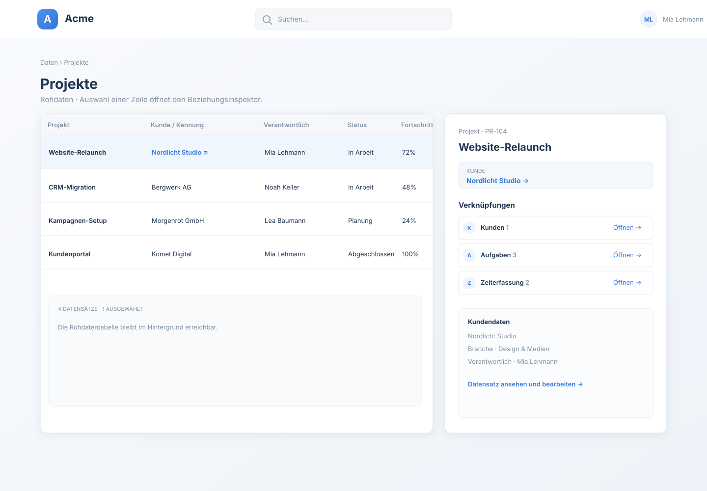
Eine eigene Seite schafft Raum für das Bearbeiten eines Objekts und seiner verschiedenen Beziehungstypen.
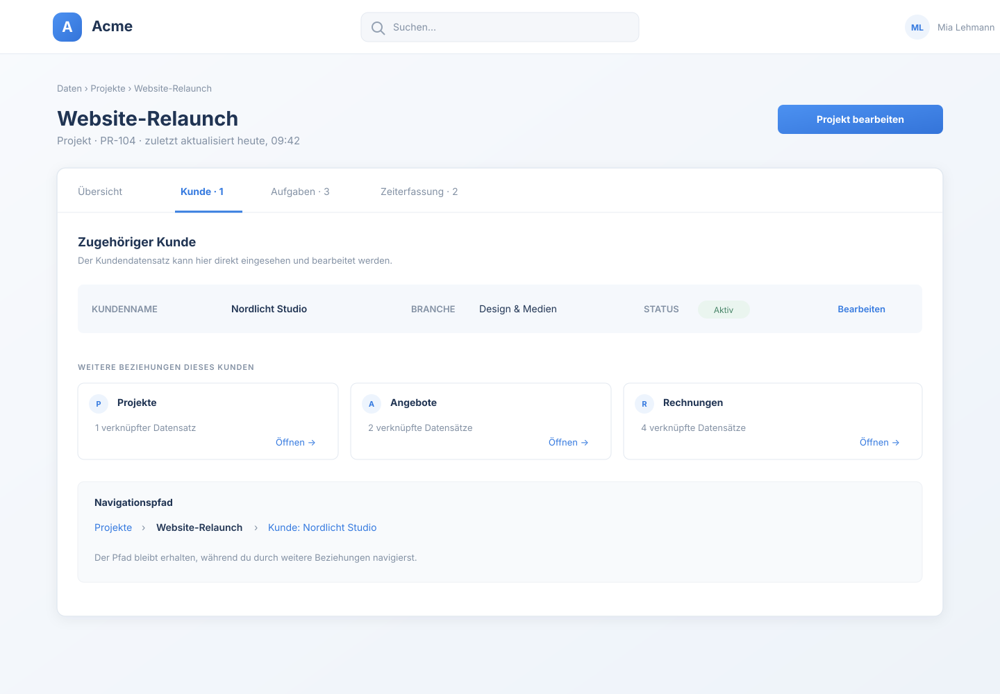
Reiter wechseln zwischen Kunden, Aufgaben und Zeiteinträgen des ausgewählten Projekts.
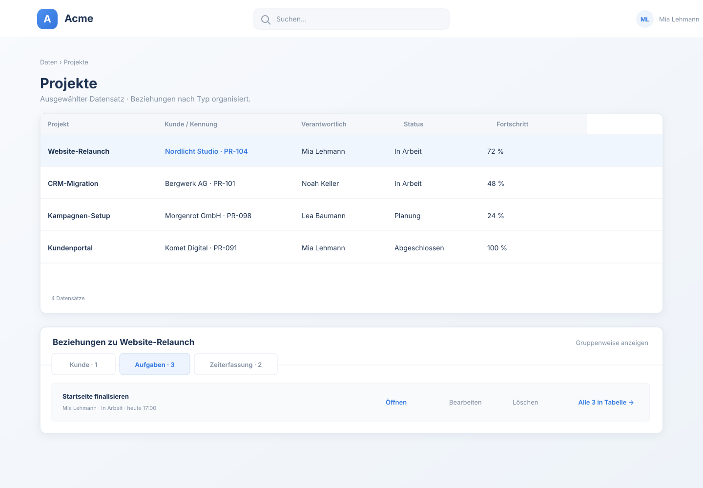
Ein Netzwerkdiagramm macht Verknüpfungen sichtbar und kann direkt zu den einzelnen Datensätzen führen.
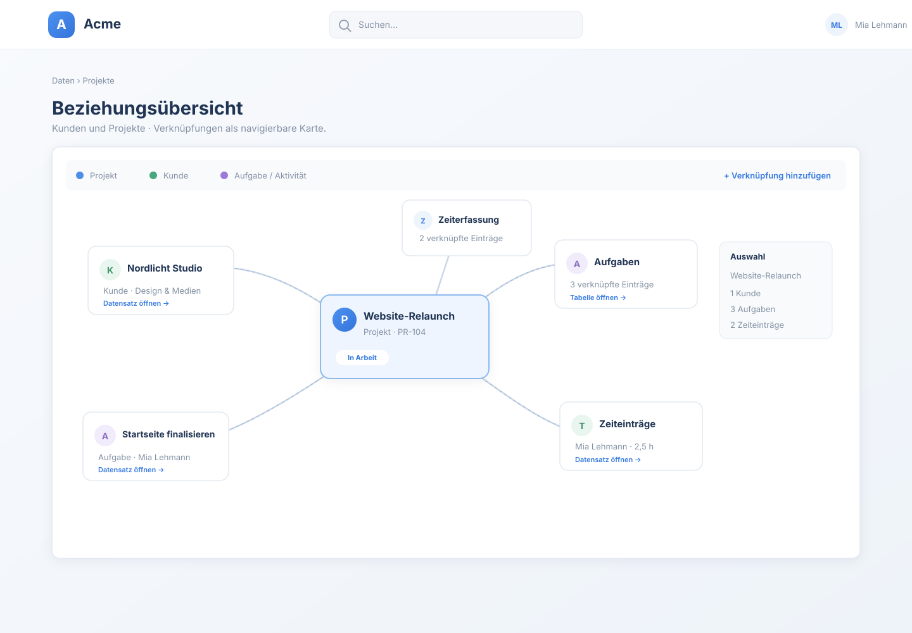
Beziehungswerte in der Tabelle öffnen den passenden Datensatz direkt und halten die Aktionsspalte schlank.
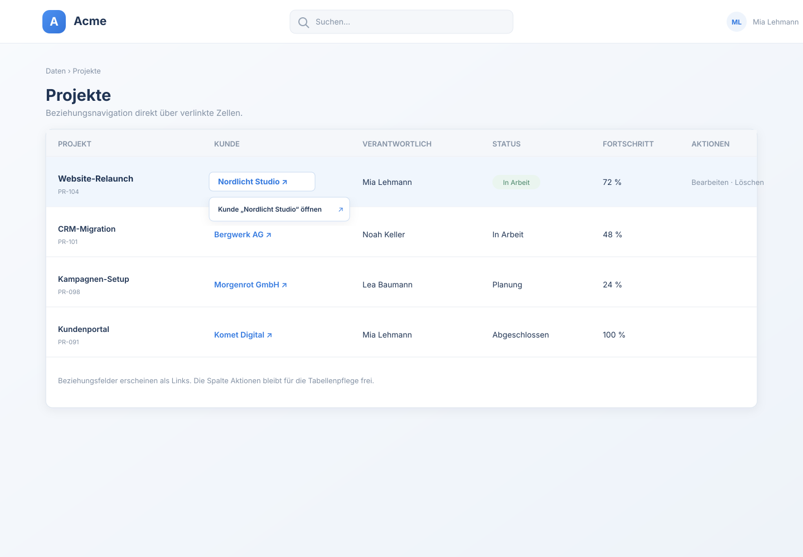
Die obere Master-Tabelle steuert die untere Target-Tabelle. Reiter wechseln zwischen Beziehungstypen; ein Target-Datensatz kann zum nächsten Master werden.
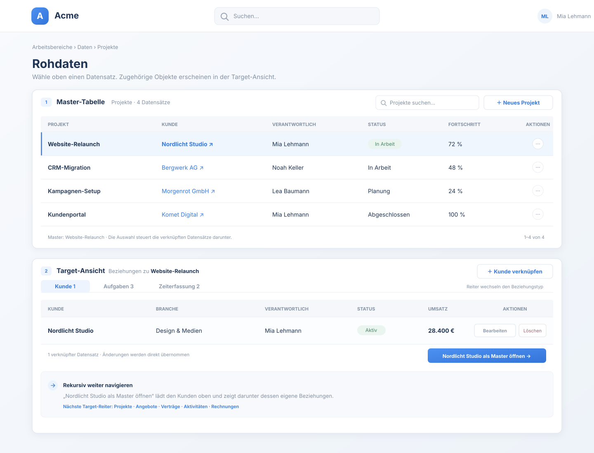
Master- und Target-Tabelle bleiben gleichzeitig sichtbar. Die Auswahl oben steuert die Beziehungstabelle darunter.
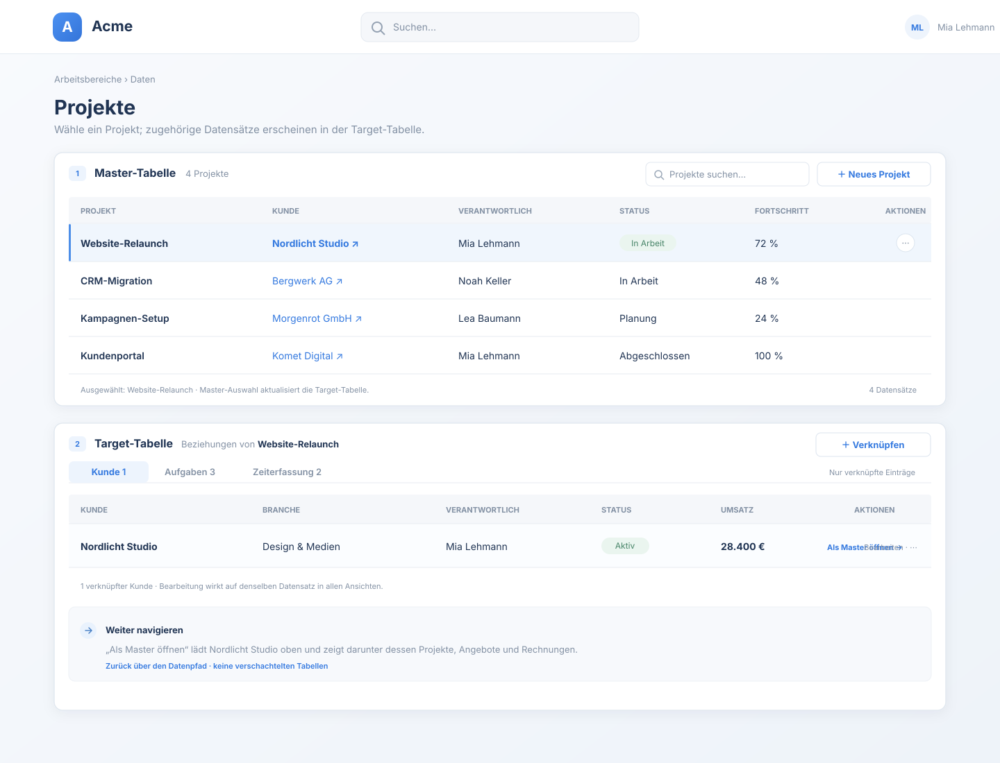
Auf dem Smartphone führt ein Drill-down von der Masterliste zur Target-Ansicht und weiter zum nächsten Master.
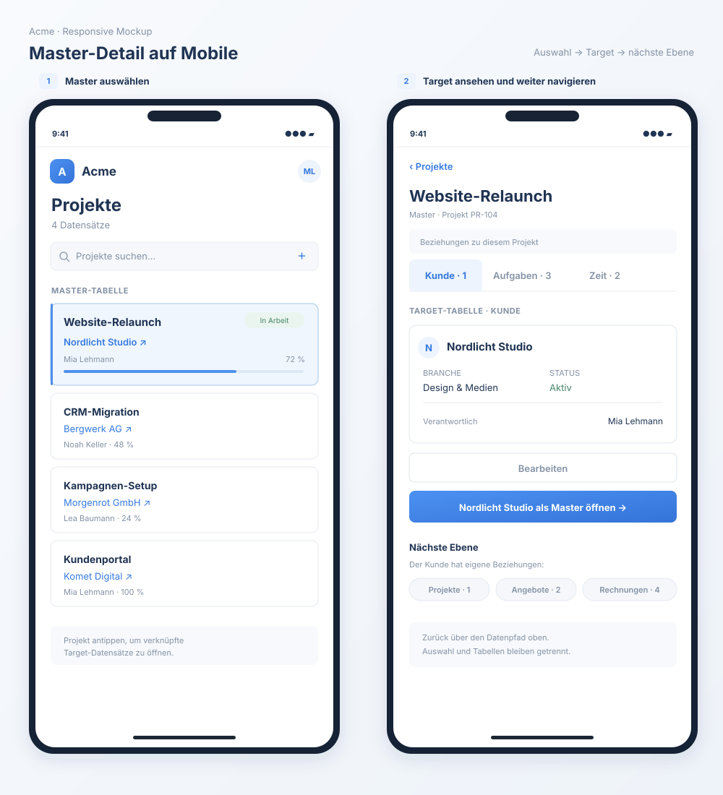
Master- und Target-Felder lassen sich direkt auf dem Smartphone ändern. Beziehungen bleiben erreichbar; ein klarer Speicherbereich fasst die Änderungen zusammen.
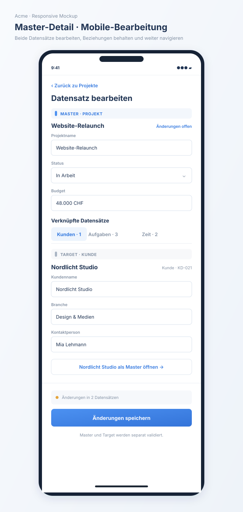
Die Ansicht ist auf 375 × 667 CSS-Pixel ausgelegt: beide Datensätze bleiben editierbar, während die Speicheraktion unten erreichbar bleibt.
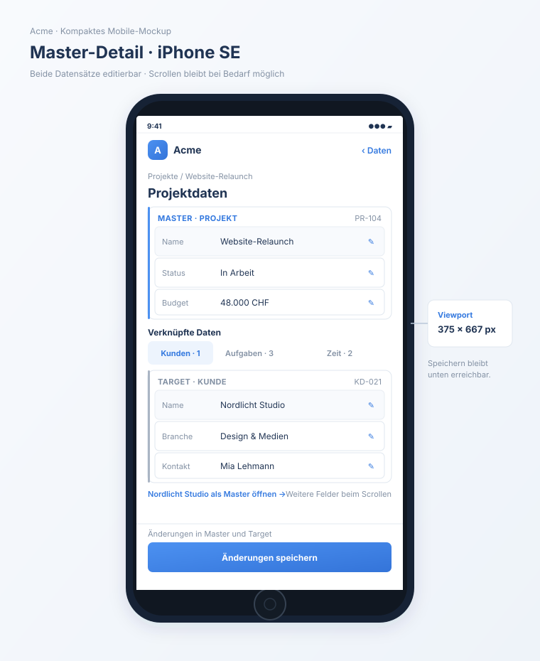
Eine Suchansicht mit scrollbarer Ergebnisliste skaliert auf viele Datensätze. Ein Tap übernimmt das Projekt als Master und führt zur Detailansicht zurück.
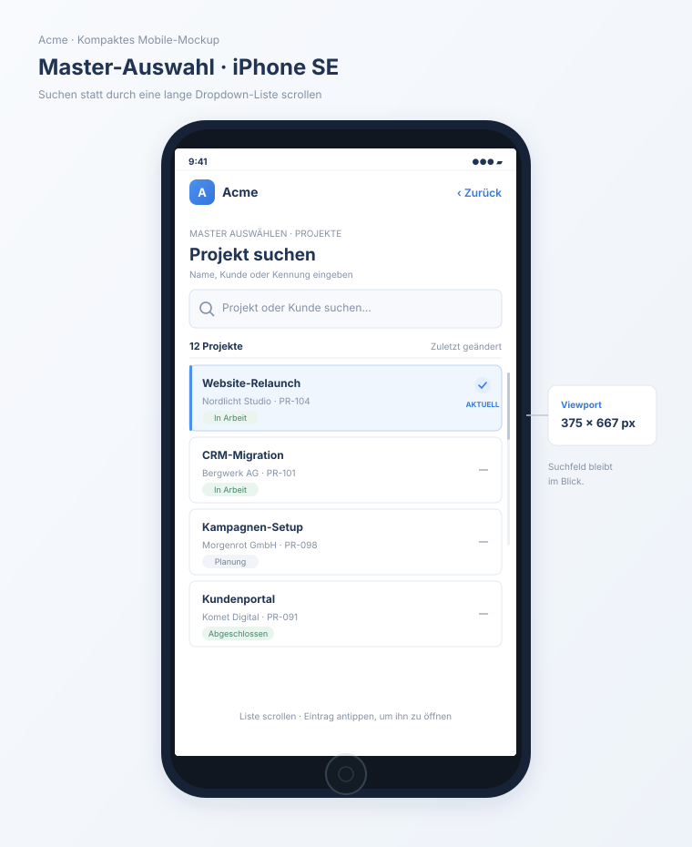